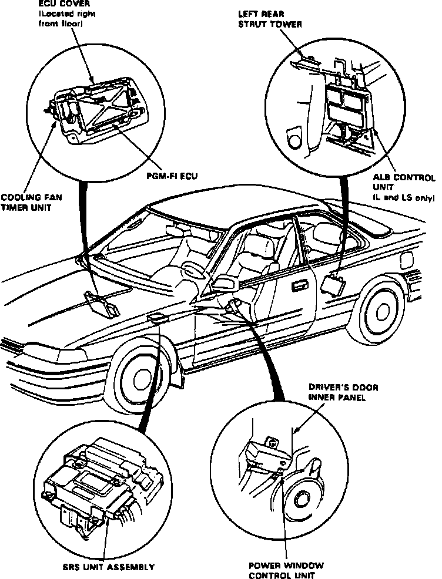
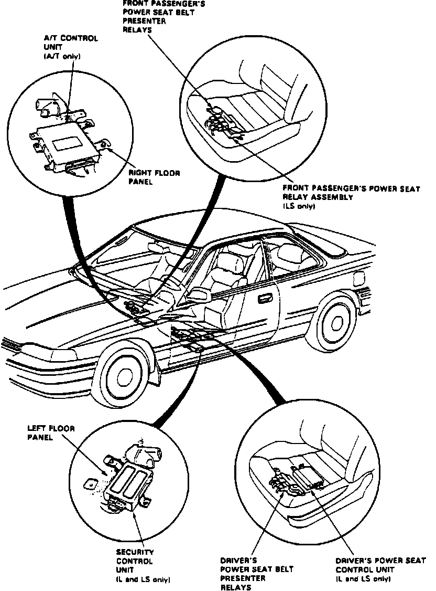

Operation CHARM
: Car repair manuals for everyone.
Home
>>
Acura
>>
1989
>>
Legend Sedan V6-2675cc 2.7L SOHC FI
>>
Repair and Diagnosis
>>
Relays and Modules
>>
Relays and Modules - Restraints and Safety Systems
>>
Seat Belt Motor Relay
>>
Locations
>>
Power Seat Belt Presenter Relays, LH (Coupe)
Power Seat Belt Presenter Relays, LH (Coupe)
Passenger Compartment Control Unit Locations:

Passenger Compartment Control Unit Locations:

Under Driver's Seat
Applicable to: Coupe